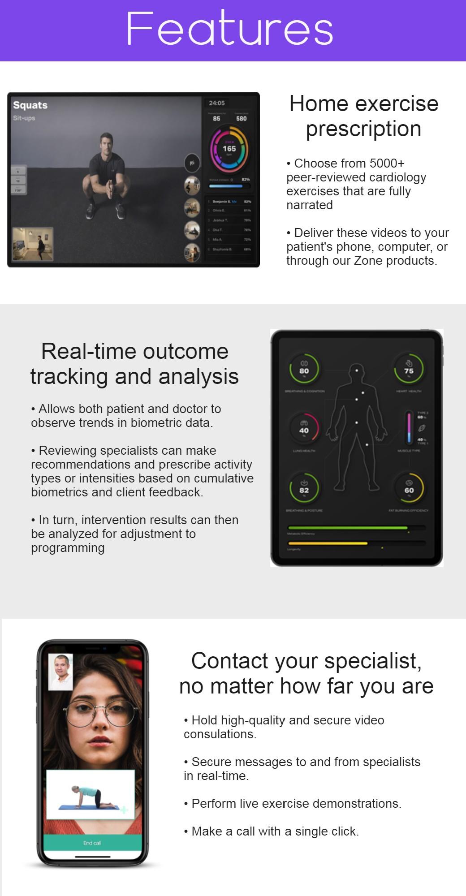

PulseLogistics
Available for Windows, Apple, and Android, PulseLogistics collects and analyses all of your data in one place. With access to large data resources while also observing trends from all synchronised Base Station and Zone devices, Pulse evolves as you do, helping to track your health over time. You and your doctor can observe trends in your health picture, while referred specialists can prescribe activities and programs through the platform, and monitor your sessions remotely. What’s more, PulseLogistics can send alerts to you or emergency services if serious anomalies are detected. In an age where finding time to see a doctor regularly can be difficult and more and more people are living and working remotely, PulseLogistics bridges the distance between you and the care you deserve.
